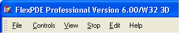
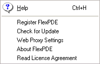

|
The Main Menu Bar |

  
|
|
The Main Menu Bar |
|

The items of the main menu present many of the conventional functions of graphical applications. The availability and precise meaning of these menu items depends on the current state of processing of the problem. We summarize the menu items here, and describe them in more detail in the following sections.
File
The "File" menu item allows you to begin operation by opening a problem descriptor file, importing a DXF file, or viewing previously stored graphical output from a FlexPDE run. It also allows you to save your work or exit the application. These operations are performed using standard dialogs of the computer operating system. (See "The File Menu");
Controls
This menu contains an assortment of functions that may be performed during the generation and running of a problem descriptor, such as running the script or switching between edit and plot modes. (See "The Controls Menu")
View
When a stored FlexPDE graphics file has been opened, the View menu item will present a menu of options for controlling the display of the stored images. (See "Viewing Saved Graphic Files")
Stop
While a problem is being run, the Stop menu item will display a selection of termination strategies of various levels of urgency. (See "The Stop Menu")
Edit
When a descriptor is being edited, this menu provides standard editing commands. (See "Editing Descriptor Files")
Help
The Help menu contains six items as shown below:

On Windows, the "Help" sub-item will initiate the help system.
On Mac and Linux, you must manually initiate your browser and direct it to "Help | Html | Index.html" in the FlexPDE installation directory.
| • | The "Register FlexPDE" sub-item allows you to inspect or modify the FlexPDE license registration. (See "Registering FlexPDE") |
| • | The "Check for Update" sub-item will contact the PDE Solutions website and determine whether later updates are available. Updates will not be automatically downloaded or installed. This check is performed automatically on a random basis when you run FlexPDE (approximately 5% of the time.) To bypass this auto check, manually modify the "flexpde6.ini" file with "[UPDATECHECK] 0". The file can be found in the user's "flexpde6user" directory. |
| • | The "Web Proxy Settings" sub-item allows you to set relevant information about your Proxy Server, if you have one. |
| • | The "About FlexPDE" sub-item redisplays the sign-on screen. Note that on Mac this item appears in the FlexPDE "Application" menu. |
| • | The "Read License Agreement" sub-item displays the End-User Licence Agreement. |
Note: On Windows and Linux, the menu bar can be detached and moved to a different part of the screen.
Page url: index.html?themainmenubar.html